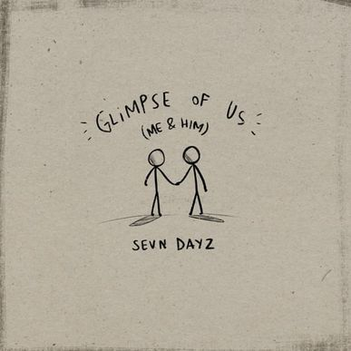
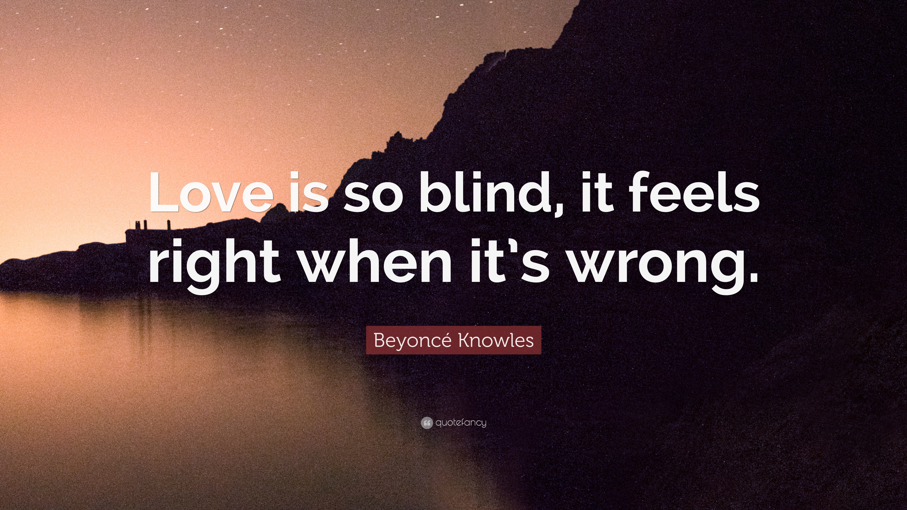

Jhande's Poems
Palani De Praiso: a place you'd love to be

A Glimpse of Him

"Deeply in love, I become so blind"
"Roller Coaster"
Jhande's Homereading Reports
Homereading Report 1
Homereading Report 2
Homereading Report 3
Homereading Report 4
Homereading Report 5
Homereading Report 6
Homereading Report 7
Jhande's Other Works
Speech
Article